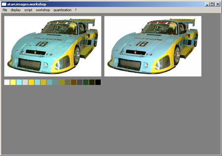
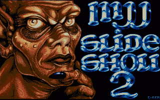
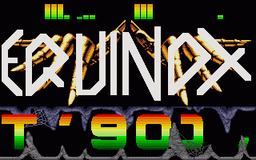
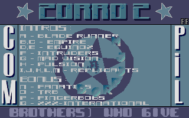

• 23/02/08 : Bonne Année 2008 à tous les ataristes encore présents en cette nouvelle année !!!
Juste un petit mot pour indiquer que le site web est un peu en stand-by pour le moment.
La partie GUESTBOOK a été un peu remaniée pour éviter les innombrables pourriels.
Je m'occupe un peu plus maintenant du website du groupe d'intros sur ST NOEXTRA : http://www.noextra-team.com/.
• 01/01/07 : Bonne Année 2007 à tous les ataristes de la terre !!! Ajout de 3 intros de jeux faits pour le site
web Atari Legend dans la partie
MES PRODS.
• 28/10/06 : Après un gros tri de tous les sites
Web sur Chez.com (grosse purge en fait !), le site revient avec une grosse
update dans la partie SOURCES où j'ai rajouté les sources
assembleur de la Delirious Demo 3 & 4 qu'Axel des MCS
avait posté sur atari-forum.com.
Mister Lautremont du même forum m'a envoyé
2 documents sur les sources de Laurent PIECHOCKI disquette numéro
2 qui étaient érronés. J'en profite aussi pour indiquer
que ce forum a créé un site Wiki
pour y mettre toutes choses intéressantes sur le monde de l'Atari
ST, j'y ai ajouté pas mal de documents et espère que d'autres
personnes auront le temps de s'y enregistrer et d'y apporter leurs connaissances...
• 06/08/06 : Petite mise-à-jour dans la partie
MES PRODS avec les dernières intros pour le site
web Atari Legend
et arrêt de l'écriture du GUESTBOOK temporaire
(trop de SPAMS !).
• 05/01/06 : BONNE ANNEE A TOUS !
Une petite mise-à-jour a été effectué dans la section SOURCES
pour les disquettes de cours 68k de Laurent Piechocki (grand merci à Stabylo
des Removers).
• 17/12/05 : Une mise-à-jour spéciale dans la
section MES PRODS du site avec la sortie de la compo
online 2005 de Dhs (fête des 20 ans de l'Atari ST) ou
j'ai codé 2 écrans. A noter le prochain RDV des ataristes
à l'ATARI CONNEXION 2006 tout près de Paris, plus d'informations
sur http://www.yaronet.com/.
• 28/11/05 : Une mise-à-jour spéciale dans la
section GALERIE du site : dans la partie MAGAZINE j'ai ajouté
3 disquettes du feu magazine ATARI MAGAZINE. J'ai aussi
rajouté la disquette St Connexion disk 2 dans la partie
PLAYERS ainsi qu'un ripper d'images dans la partie UTILS.
Dans cette section du site j'ai aussi ajouté une compile d'utilitaires
: MFC COPY DISK 2 dans la partie DIVERS.
• 18/07/05 : Ajout de liens spéciaux sur le GFA
BASIC (Atari/Pc) dans ma page de LIENS
ainsi que l'ajout des codes de 25 menus AUTOMATION/LSD + 1 source
d'un cracktro CYNIX dans ma page de SOURCES.
• 28/06/05 : Ajout de trois nouveaux utilitaires
dans la partie GALERIE.
• 27/06/05 : Mise-à-jour importante du site pour
les vacances : pleins de codes sources ASM & GFA-BASIC pour
les plus fervents codeurs sur Atari ST !
Un nouvel espace est maintenant ouvert : SOURCES
(icône poubelle sur la page d'index), il contient pas mal de fichiers
assembleurs sources à télécharger ainsi que des tutoriaux
pour programmer en 68000 sur ST. Il y a pas mal de sources de groupes
et de démos testés sous DEVPACK 2.25f qui ont necessités
quelques retouches pour que cela puisse bien compiler et s'executer proprement...
Bien entendu le compilateur est téléchargable sur la page
avec ses outils.
Dans la partie GFA-BASIC,
j'ai ajouté un disk (au format MSA) remplie de codes sources (au
format LST) provenant des editions Pressimage : c'est une vrai boite aux
trésors pour les GFA-PUNCHISTES !
Dernière petite intro en date : pour jeu MASQUE+
qui sort enfin sur atari-legend. Cette intro à la particularitée
de fonctionner différement sur un STF ou sur un STE : sur un STF
on voie que le graphisme ne rend pas trop bien (palette de 512 couleurs)
avec un soundchip de crawdaddy joué en fond alors que sur un STE,
la palette étendue rend mieux à l'écran et elle exploite
le DMA en jouant un module "chipie" à 12,5 Khz. Tout
ca avec un overscan haut/bas... et bien entendu qui ne fonctionne pas
sur un Falcon.

• 25/05/05 : Petite mise-à-jour de la page
de Liens et ajout de la capture de l'intro BSW DCD no 135 dans
la page des productions.

• 17/03/05 : A la demande de certains surfeurs
j'ai rajouté les compilations MAD VISION qu'il me restait.
En ce qui concerne la tradution des pages en anglais, je n'ai jamais eu
le temps de le faire et je ne pense pas me charger de cette lourde tache,
donc le site restera francophone...
• 16/03/05 : Grosse mise-à-jour du site dans la
section GALERIE. Ajout d'un nouveau player STE dans les Players,
ouverture (enfin !) de la page Divers avec pas moins de 8 compiles
d'utilitaires de groupes ST, ajout de 16 utilitaires dans la page Utils
(ça faisait deux ans que je n'y avait pas touché !), ajout
aussi des 3 amazines manquants dans la petite section MAD VISION
et bien sûr mise-à-jour de la page des Liens.
Sinon une nouvelle section vera le jour très prochainement, elle
concerne tout ce qui est lié à la programmation asembleur
sur l'ATARI ST avec pleins de sources et de documentations.
• 20/12/04 : Petite mise-à-jour dans la section
MJJPROD sur le concours des 10 ans du site de DHS.
• 05/11/04 : Grosse mise-à-jour dans la section
GALERIE pour les fanas de modules : les pages PLAYERS
et TRACKERS sont encore une fois agrémentées de leurs logiciels
à télécharger :
* AGTracker v 2.1 d'American Gold
* Paula v 2.4 sous GEM
* Ultimate Tracker v 2.51 sous GEM
* Protracker ST v2.0 avec tous ses programmes
* Esion Xli ST v1.0
* The Empire Noisetracker v1.5 de Dr SATAN
* Audio Sculpture de Synchron Assembly
* Music Master de Computer's Dream (nécessite un dongle
pour fonctionner !)
Seul le logiciel HMS Soundtracker d'ESAT Software manquera au téléchargement.
Il manque aussi la version sorti sonore port cartouche du Soundtracker
du groupe ST CONNEXION...
Mise-à-jour aussi de la page des productions MJJPROD
:

Une intro fait pour les compiles Blue Software pour the
Byte of T.C.E.
Mise-à-jour aussi de ma page des LIENS
et correction du javascript qui buggait sur la page d'intro de chargement
des images di site web. (merci encore une fois à tiscali de surcharger
nos pages avec d'énormes banières bourrées de javascript
!)
• 12/03/04 : Mise à jour de ma page des LIENS
qui en avait vraiment bien besoin. Après l'abandon du site de Shredder...
Le groupe français T.C.P. "s'européanise" en devenant ParadiZe...
ST MAG se refait une santé avec un site francais/anglais... et
Mr Nours qui se met a coder comme un fou sur ST... Brume
m'annonce que Pacigame sera abandonner et supprimer, que
Pacidemo restera tel quel. C'est sans compter que son projet
de faire un site "unitaire" venait enfin de voir le jour ! Projet qui
restait sans fin depuis pas mal de temps vient de voir la naissance de
Atari Legend.
Souhaitons lui bon courage à à toute la bande qui comptent les
néanmoins Silver Surfer (son site est clos aussi !), ST Graveyard,
Shredder, cb, etc...
Grosse news !!! Le source complet de la compile MJJPROD à
10 ans + 1 est disponible sur la page en question (section MJJPROD).
J'en ai profité pour rajouter aussi quelques compiles MAD VISION
dans ma Galerie. (il y en aura d'autres encore à venir...)
La prochaine mise à jour du site concernera la partie MUSIQUE.
Patience
!
(Petit mot à toune, j'ai bien lu le message...)
• 05/01/04
: Petite mise à jour dans la section MJJPROD
au niveau des petites productions faites pour le groupe. Et surtout BONNE
ANNEE 2004 à tous les ataristes !
• 24/10/03 : Très peu de news en ce moment. La
page de liens a été revisitée et ne cesse de grossir au fur et
à mesure du temps...
Sinon j'ai recu un petit email de Jacky qui m'a fait beaucoup plaisir.
(Merci encore !)
En attendant que la section MJJPROD soit implementée par de nouvelles
prods, je vous conseillerai de faire un tour sur ma page de liens tout
en bas, vous pourrez voir toutes les photos du groupe depuis c'est dix
dernière année ! N'oubliez pas non plus d'allez voir le
site officiel,
les dernières prods depuis la MJJPARTY 3 y sont disponibles !
Et on encourage un peu Florent d'ATARI.GAMES
qui prend aussi congé de nous car il est trop occupé en
ce moment...
A noter que Brume fera bientôt son grand retour, la bataille
n'est pas terminée !
• 28/07/03 : Beaucoup de news : après Shredder,
le webmaster francophone cb d'AtariForce
va prendre un congé (non prolongé j'espère !) avant
de faire une prochaine MAJ de son site web mais nous à gratifier
de pas mal de jeux sur son site, à visiter et re-visiter très
rapidement !
Florent, le webmaster du site francophone ATARI.GAMES
a beaucoup travailler ces temps-ci, une nouvelle section GFA BASIC
a vu le jour avec pleins de goodies. Il a créé aussi un
logiciel
sur PC : ATARI.IMAGE.WORKSHOP (ou a.i.w.). Ce logiciel permet de
convertir des images entre les différents formats PC et Atari ST,
un peu comme XnView (avec le s.d.k. GFL). C'est encore en béta
(3ème version) et promet grâce au scripting (charger/sauver/créer/avec
séquencement) qui permet d'adapter différents traitements
sur différentes images.

Enfin petite MAJ de ma page de liens...
• 26/06/03
: Nouvelle prod des MJJPROD, le slideshow version 2 vient d'arriver
tout chaud dans les bacs avec une version émulateur (STEEM) au format
.st et une autre version pour Falcon ou ST avec un HD. A VOIR ABSOLUMENT
et à télécharger sur le site OFFICIEL
de Fel'X !

Autre niouze : le webmaster Shredder
arrête sa passion nostalgique de l'Atari ST, cela fait le deuxième webmaster
cette année qui abandonne son site et qui sont sur le web depuis longtemps.
Bon courage pour la suite Shredder !
• 05/05/03
: Grosse Mise-à-jour de la page MES LIENS.
| • 04/05/03
: Enfin des news sur les sites web de PACIGAME et PACIDEMO,
Brume les remets à disposition mais n'y touchera plus... Quel
dommage !!! La toile francophone de l'Atari ST et de la scène perd quelqu'un de très important dans sa famille... un peu de tristesse tout de même pour ce début de l'année 2003... Beaucoup de décisions difficiles ont été prises de sa part mais souhaitons-lui bon courage pour ses futurs projets ! Sacré Bruno, tu nous manque déjà ! |
• 24/04/03 : COMMUNIQUE :
Appel a tout les webmasters...Je demande un week-end de fermeture des sites avec en premiere page la demande de réouverture des sites Pacidemo et Pacigame.....
J'appelle tout les visiteurs a laisser des messages sur le forum de Mr
Nours...
http://emulatari.free.fr/
Sans Brume sur le net ca sera pas comme avant...Je ne connais pas sa
raison mais on n'abandonne pas sa passion, on peut etre desabusé...
Fel'X[MjjProd] le Jeudi 24 avril 2003.
|
• 13/03/03 : On vient de m'envoyer la compile TSK n°13 que j'ai immédiatement mis sur le site, toujours dans la section GALERIE. Enfin je ne suis plus seul à connaître le groupe des Fanatics !
• 12/03/03 : Au menu aujourd'hui une grosse mise-à-jour très importante au niveau des SoundTrackers et Protrackers (section GALERIE), pas moins de 12 Protrackers dont pas mal de premières versions (5 sont disponibles en téléchargement) ainsi que quelques SoundTrackers (3 sont disponibles aussi en téléchargement).

• 02/03/03 : Deux sites web ataristes francophones importants à visiter :
- PACIGAME.COM : enfin Brume nous offre une superbe mise-à-jour de son site web regroupant toutes les compiles ATARI ST de crackers connues à ce jour. Aidez-le à compléter les compiles manquantes ! Il y a quelques 500 compiles téléchargeables pour le moment...
- Le site STALIVE de Fel'X prend du galon : aider par un des graphistes des Mjjs GoldenBoy et de quelques officionados (cb pour ne pas le citer !), il a ouvert une nouvelle branche de son site qui regroupait déjà tous les soundchips Atari de l'époque : ST Alive Games. Cette section est à découvrir absolument !

Enfin quelques petites modifications sur le site : rajout de 2 liens de sites internet francophones qui vaut le coup d'oeil : Alone in the Past (importante mise-à-jour) & Age Of Coding. Rajout de 2 captures d'écrans dans la section INTROS. Ajout aussi d'un utilitaire : DISCO SCOPIE envoyé bien sûr par Fel'X de Mjjs !
• 26/01/03 : Bonnes Années 2003 à Tous !
- CONCOURS D.C.K. : le concours terminant le 31/01, j'en ai profité pour faire une deuxième démo, tous les sources et les 2 démos se trouvent ici, merci encore à Brume pour avoir reconduit le concours fin janvier !
- Mise-à-jour de la page MJJPROD section MJJPLAYER.
• 23/12/02 : Pleins de Cadeaux de Noël, la section UTILS a été agrémentée des logiciels suivants :
- 3D CONSTRUCTION KIT
- CALCOMAT & DATAMAT ST
- DALI 4 full (2 disks)
- NEWDESK (émulation du bureau GEM du TOS v 2.05)
- EASY-DRAW
- ATARI ST BASIC (celui livré avec l'Atari ST)
- PLUS PAINT (merci Fel'X !)
- LOGO (merci Fel'X !)
Une mise-à-jour prochaine pour la section GFA BASIC ou les punchs feront leurs grand retour grâce à Tonton Bruno...
• 02/12/02 : Deux bonnes nouvelles :
- MJJPROD change d'url pour "encore plus" meilleur : http://perso.wanadoo.fr/mjjprod/
- CONCOURS D.C.K. : enfin un concours de démos pour les ataristes en 2002. Pour tout savoir, il faut aller sur le site de Brume !
Petite mise-à-jour de ma page de LIENS en attendant d'en rajouter d'autres.
• 11/11/02 : Grosse mise-à-jour de la section GFA BASIC :
- Modifications des scripts et tous testés
- Enlever l'image de fond
- Ajout de routines pour : écouter des soundchips, sauvegarder la résolution de l'écran, sauvegarder la palette systême en rendant la main dans un programme et affichage d'un mandelbrot simple en 320*200
- Toutes les routines sont disponibles aux téléchargements.
• 07/11/02 : J'heberge temporairement la page la plus fournie sur la FAQ des transferts sur ST->PC et vice-versa, voici le lien pour accéder à la page de TIK : Guide.htm. En souhaitant un prompt retour au site de TIK...
• 30/09/02 : Ajout d'une section MJJPROD : elle contient pour le moment les 2 prods faites avec le groupe dont je suis membre, Atari rules...
• 18/07/02 : Encore une nième mise à jour du site : La page des LIENS à été updatée complètement.
• 14/07/02 : Encore une mise à jour sur le site : Ajout de 5 programmes dans la section GALERIE - UTILES : DISK SYSTEM (compiles d'utiles par The Terminators), MAKEICON, PRINTMASTER PLUS, SPY II et SPEECH SYNTHETIZER soit pour un total de 26 utilitaires.
Ajout aussi dans la section LES INTROS de captures d'écrans des groupes de crackers MCA et Blade Runners.
• 10/07/02 : Dernière mise à jour sur le site : ajout de captures d'écrans dans la section LES INTROS de différents groupes de crackers. Soit un peu plus de 60 GIFS...
• 20/05/02 : Beaucoup beaucoup de mise à jour sur le site : ajout de 2 nouveaux utilitaires dans la section UTILES de la GALERIE. Ouverture de 2 nouvelles sections : GUESTBOOK & LES INTROS qui contient pas mal de captures d'écrans ainsi qu'une compile perso

d'intros/dentros à télécharger ABSOLUMENT ! Mise à jour de la page RECHERCHE avec des réponses plus précises sur les recherches dans le site.
• 05/04/02 : Mise à jour de la page LIENS et ajout de quelques forums anglais/français où on parle ATARI : GROSPIXELS.COM et PACIGAME AERA en encourageant Brume à remettre ses sites en place très prochainement. Je fête aussi le retour de HANGLOOSE en espérant une plus grande longitivité du site. Allez sur le site ATARI FRENCH CONNEXION pour y découvrir les derniers jeux sortis sur ATARI ST en 2002.
• 29/03/02 : Mise à jour de la page de LIENS. Un nouveau site pour les nostalgiques de l'Atari ST par Felx/MjjProd qui nous présente son nouveau site web : ST ALIVE.
• 08/03/02 : Mise à jour de la page de LIENS.
• 03/03/02 : Mise à jour de la page UTILES dans la section GALERIE : ajout de 8 utilitaires.
• 30/01/02 : Mise à jour de la page de ma page de LIENS.
• 17/01/02 : Encore une nième bourde de mon super hébergeur depuis 1997. Spamming de plus de 4000 emails encore une fois ce matin et ca continuait encore après avoir effacé tous les emails. Sur CHEZ.COM il se moque vraiment du monde ! Encore des emails passés à la trappe...
| • 16/01/02
: Après l'affaire de mister Xavier qui pompe des
sites web français et qui fait avec tout ça un super
site web Atari avec du contenu sans siter ses sources (voir le forum
sur le site de MrNours),
j'ai trouvé pire : http://lemouillour.eric.free.fr/.
Il fait du copier/coller sur sa page de liens Atari : http://lemouillour.eric.free.fr/emul/atari.htm,
il en profite aussi pour pomper d'autres pages de liens comme celui
du site ToxicMag (voir contact sur l'adresse email !), et en plus,
comble du comble, il a fait une page spécial sur le GFA BASIC
(http://lemouillour.eric.free.fr/langages/basic/gfa.htm)
avec une superbe belle image que j'ai deja vu sur un autre site... He !!! Messieurs en manque d'imagination, s'il vous plait, arrêté de pomper le travail d'autrui !!! |
• 27/12/01 : Rajout dans la section GALLERIE - UTILS du logiciels de création de démo DCK en français. Merci à cb //AtariForce// de mettre la doc du logiciel sur mon site &;-)
• 19/12/01 : Citeweb c'est fini ! J'ai donc décidé de mettre sur mon site web principal la partie du site contenant les modules.
• 07/12/01 - 13/12/01 :beaucoup de problèmes sur CHEZ.COM : pertes d'emails à cause d'un trop pleins de spamming. Désolé pour les personnes à qui je n'ai pas repondu aux emails. Si vous avez le courage, renvoyer un autre email.
• 04/12/01 : mise à jour de ma page de LIENS.